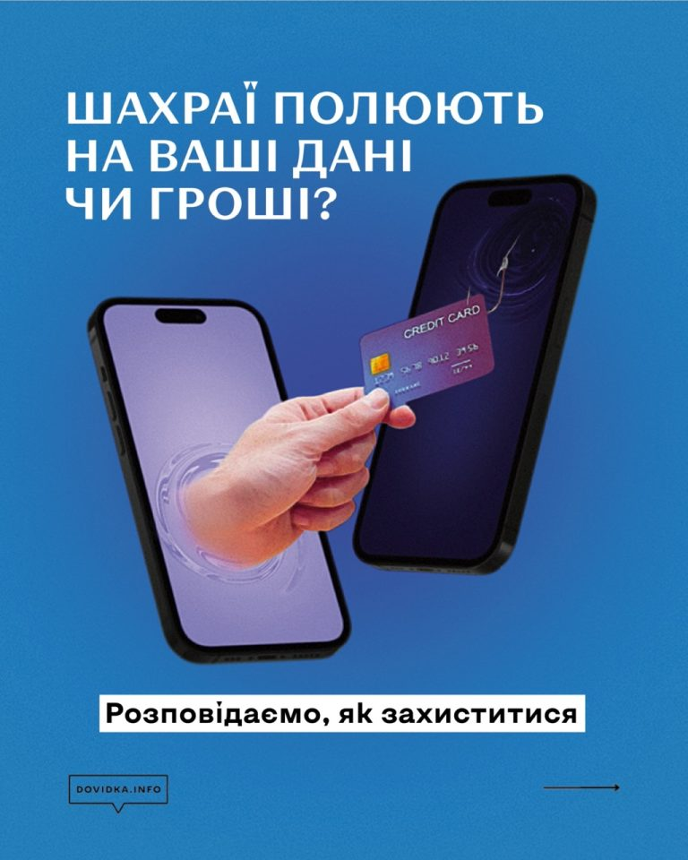
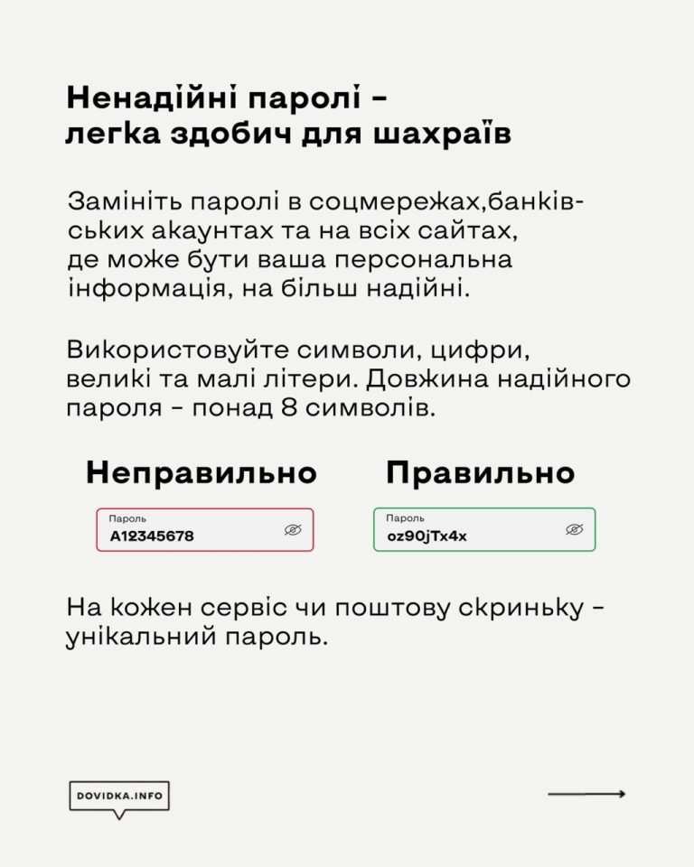
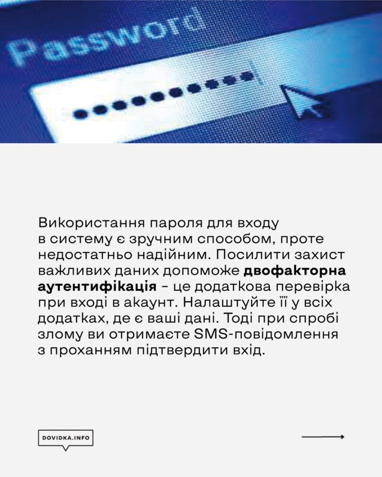
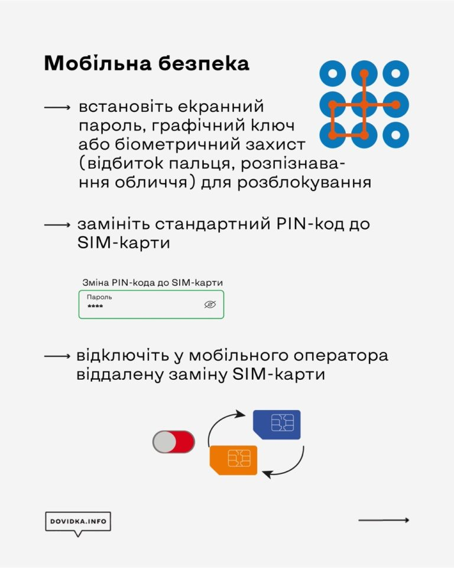
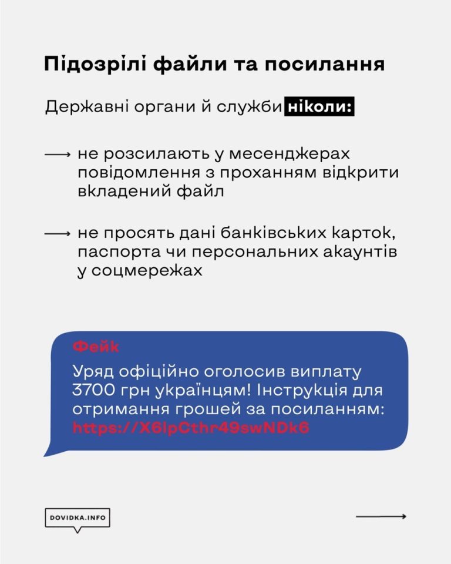
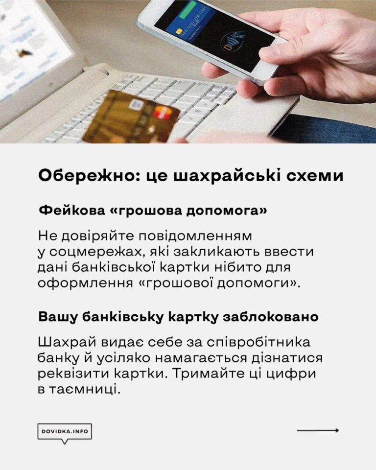
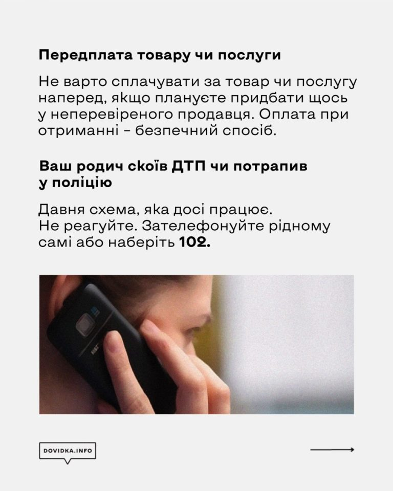
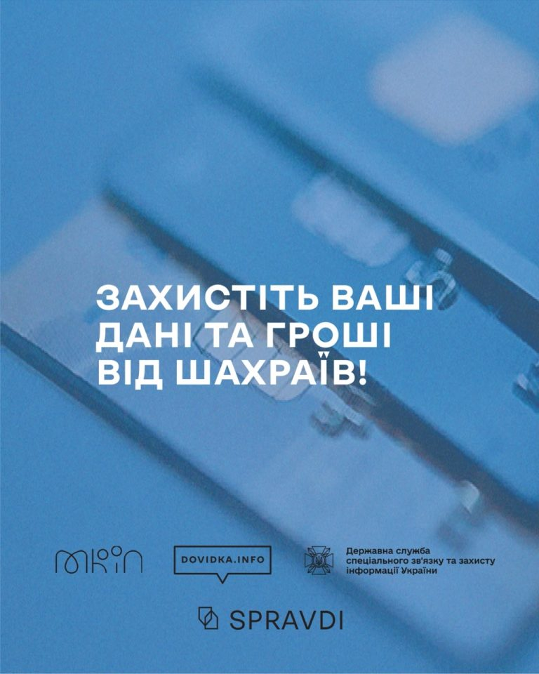

Захист ваших ґаджетів від шкідливих програм.
Захист ваших ґаджетрам, встановлення надійних паролів та кілька правил з кібербезпеки – заходи обачності, які вбережуть вас від зловмисників, які хочуть заволодіти вашими даними, включно з даними банківських карток і акаунтів у соцмережах. Рекомендації розроблено проєктом Dovidka.info від Центру стратегічних комунікацій та інформаційної безпеки при МКІП спільно із Держспецзв’язку.
Захист від шкідливих програм
Найперше, що допоможе вам захистити свої пристрої від “шкідників” – встановлення антивірусних програм. Рекомендовані програми: Avast, ESET, McAfee, Zillya.
Як не натрапити на антивірус-підробку?
Завантажуйте антивірусну програму тільки з офіційного сайту розробника чи з перевірених джерел (Play Market, App Gallery, App Store і Google Play). Якщо не можете придбати платну версію програми – знайдіть безкоштовний аналог, але не завантажуйте зламані версії платних програм.
Регулярно оновлюйте антивірус. Тільки тоді програма вчасно попередить про загрозу.
Антивірус встановлено. Що далі?
Систематично перевіряйте ваш пристрій на наявність загроз, що можуть зашкодити вашим даним. Також перевіряйте антивірусом USB-накопичувачі та інші зовнішні пристрої, які підключаєте до комп’ютера. Періодично “скидайте” налаштування свого смартфона. Так можна знешкодити програми “keylogger”-и, які відслідковують дії користувача.
Не переходьте за сумнівними посиланнями. Такими є:
- отримані від невідомих відправників на електронну скриньку, в SMS чи повідомленні в месенджерах і соцмережах;
- повідомлення із закликом до термінової дії та ті, де використовується надзвичайно актуальна та часто згадувана у ЗМІ тема;
- ті, що ведуть на сумнівні сайти чи канали в соцмережах;
- ті, що не мають протоколу безпеки: https – безпечне, http – потенційно небезпечне;
- ті, що містять слово /download/ – при переході за такими посиланнями одразу розпочинається завантаження файлу. Зловмисники, найвірогідніше, завантажать шкідливий код або приведуть на фішинговий сайт.
Звертайте увагу на різку та помітну зміну в роботі пристрою: різке зниження заряду, повільна робота, поява файлів, яких ви не створювали, чи програм, яких не встановлювали, поява невідомих програм в автозавантаженні при увімкненні пристрою тощо. Можливо, це наслідок діяльності шкідливих програм.
Надійні паролі
Подбайте про захищеність ваших пристроїв та облікових записів. Ненадійні паролі – легка здобич для ворожих хакерів і шахраїв.
Дотримуйтесь цих простих правил:
Замініть паролі в соцмережах, банківських акаунтах та на всіх сайтах, де може бути ваша персональна інформація, на надійніші. Усі паролі рекомендовано змінювати раз на місяць.
Регулярно перевіряйте паролі на витік. Ось корисний сервіс, де можна це зробити.
Як працює:
На сайті потрібно ввести свій e-mail або номер телефону. Якщо паролі зареєстрованих на них облікових записів було зламано, сайт миттєво сповістить вас про це. Якщо ні, то витоку ваших даних не було.
Використовуйте менеджери паролів – це спеціальні застосунки, які зберігають ваші паролі в зашифрованому вигляді, і вам не доведеться запам’ятовувати всі складні комбінації, а лише пароль від самого застосунку. (Рекомендовані: 1Password, KeePassXC, Dashlane або менеджери в антивірусних програмах).
Двофакторна аутентифікація – це звичайна двоетапна перевірка при вході в акаунт. Налаштуйте її. Тоді при спробі зламу ви отримаєте SMS-повідомлення з проханням підтвердити вхід в акаунт.
Встановлюйте екранний пароль, графічний ключ або біометричний захист (відбиток пальця, розпізнавання обличчя чи голосу) для розблокування пристроїв.
Замініть стандартний PIN-код до SIM-карти.
А які паролі надійні? Ті, що…
.- не містять поширених поєднань букв і слів; символів, що повторюються або йдуть один за одним (0000, 1111, abc123); вашого імені, прізвища, дати народження; імені, прізвища або дати народження ваших батьків, дітей, чоловіка або дружини
- натомість містять спеціальні символи, цифри, великі та малі літери в кількості понад 8, а також слова, яких немає в українській чи англійській, і, бажано, в інших мовах теж
- створені за допомогою сервісу генерування паролів (наприклад, cyberpolice.gov.ua/generate-password)
- використовуються тільки в одному сервісі (на кожен сервіс чи поштову скриньку – свій унікальний пароль)
- не зберігаються у вас на смартфоні або ноутбуці в нотатках чи на наліпці на вашому ноутбуці, що стоїть посеред офісу
- їх немає у базі haveibeenpwned.com
- їх не знають ваші рідні, кохані, колеги
- ті, що істотно відрізняються від минулого пароля, що використовувався на цьому ж сервісі
Безпечні налаштування браузерів
Підтримувати браузери у робочому стані – це своєчасно оновлювати їх, як і решту інстальованих на пристрої програм та саму операційну систему. А ще – завантажувати їх лише з офіційних сайтів і використовувати лише мінімум розширень до них.
Ось показники, які потрібно налаштувати у ваших браузерах:
Сhrome
У меню “Налаштування”:
- Конфіденційність та безпека – Безпека – Безпечний перегляд – Покращений захист
- Конфіденційність та безпека – Безпека – Додатково – Завжди використовувати безпечне з’єднання
- Завантажені файли – Завжди вказувати місце для завантаження
Firefox
У меню “Налаштування”:
- Файли і програми – Завжди запитувати, де зберегти файли
- Приватність браузера – Безпека – Блокувати небезпечний і шахрайський вміст
- Приватність браузера – Безпека – Увімкнути HTTPS-режим у всіх вікнах
Opera
У меню “Налаштування”:
- Конфіденційність і безпека – Безпека – Увімкнути захист від шкідливих сайтів та завжди використовувати безпечні з’єднання
- Завантаження – Запитувати папку збереження перед завантаженням
Tor
У меню “Налаштування”:
- Конфіденційність і захист – Захист – Рівень безпеки – Високий
- Конфіденційність і захист – Захист – Підроблений вміст та захист від шкідливих програм – Блокувати небезпечний та обманний вміст
- Конфіденційність і захист – Захист – Сертифікати – Запитувати у OCSP-серверів підтвердження поточного статусу сертифікатів
- Конфіденційність і захист – Захист – Режим “Тільки HTTPS”
- Основні – Файли та програми – Завжди видавати запит на збереження файлів
Як безпечно завантажувати й використовувати застосунки та файли
Кіберзлочинці постійно вигадують нові способи для обману користувачів через шкідливі застосунки та програми. Завантажити безкоштовний фільм, гру чи музику – завжди ризик інфікування шкідливим програмним забезпеченням. А мета зловмисників – отримати доступ до вашої особистої інформації.
Для безпеки ваших даних і пристроїв дотримуйтесь таких правил завантаження застосунків і файлів:
- Використовуйте лише ліцензійне програмне забезпечення із перевірених джерел (магазинів Play Market, App Gallery, App Store і Google Play чи офіційних сайтів-розробників). Звертайте увагу на те, хто опублікував додаток, адже деякі магазини мають сумнівні копії популярних додатків. Російські віруси нині часто поширюються через “піратські” програми.
- Не завантажуйте файлів і застосунків із невідомих джерел (сумнівні сайти, сторінки й канали в соцмережах, невідомі відправники).
- потенційно небезпечні розширення файлів: .exe, .bin, .ini, .iso, .dll, .com, .sys, .bat, .js, .apk;
- потенційно безпечні розширення файлів: .docx, .zip, .rar, .pdf.
- Встановили файл – перевірте його за допомогою антивіруса. Але нове шкідливе програмне забезпечення або код можуть бути визначеними тільки антивірусом, який регулярно оновлюється.
- Якщо не можете придбати платну версію програми, знайдіть безкоштовний аналог, але не завантажуйте зламаних версій платних програм: зазвичай вони містять шкідливий програмний код.
- Оберіть заборону встановлення застосунків з неперевірених джерел та автоматичного завантаження файлів, а для браузера – функцію “щоразу запитувати про місце зберігання файла перед завантаженням”. Якщо випадково перейдете за посиланням, яке автоматично розпочинає процес завантаження, він не розпочнеться, поки ви не підтвердите це.
- Уникайте використання застосунків російських розробників: ВК, Одноклассники, Яндекс.Браузер, 1С, Mail.ru та інші – росіяни можуть їх відслідковувати. Перед завантаженням обов’язково перевіряйте інформацію про те, хто розробник та власник застосунка, чи не заборонений він в Україні.
- Контролюйте дозволи, які запитує програма під час встановлення. Не всім застосункам для нормальної роботи необхідний доступ до вашої геолокації чи персональної інформації.
- Оновіть застосунки у своєму смартфоні та програмне забезпечення на комп`ютері. Це необхідно, адже розробники постійно працюють над покращенням своїх безпекових протоколів.
Як захиститись від зловмисних розсилань у месенджерах
Ворог не полишає спроб кібератакувати українців. Небезпечні файли хакери можуть розсилати в месенджерах, які ми використовуємо.
Часто ворог маскує такі повідомлення як такі, що надходять нібито від державних українських структур чи правоохоронних органів.
Запам’ятайте: державні органи й служби не розсилають у месенджерах повідомлення з проханням відкрити вкладений файл і не просять надати дані банківських карток, паспортну інформацію, дані персональних акаунтів у соцмережах тощо.
Ось правила безпечного налаштування популярних месенджерів:
Telegram
Відкрийте меню “Налаштування” та перейдіть у розділ “Конфіденційність та безпека”.
Оберіть у ньому такі пункти:
- Хто може бачити номер телефону – Ніхто
- Хто може знайти за номером – Мої контакти
- Хто може бачити час моєї останньої активності – Ніхто
- Хто може бачити фото та відео мого профілю – Мої контакти
- Хто може додавати посилання на мій обліковий запис під час надсилання моїх повідомлень – Мої контакти
- Хто може мені телефонувати – Мої контакти або Ніхто
- У розділі “Виклики” для Peer-to-peer слід також встановити значення – Мої контакти
- (це параметр, який дозволяє отримувати або не отримувати вашу IP-адресу користувачам, які вам телефонують)
- Хто може додавати мене до чатів – Мої контакти
Двоетапна перевірка – Встановити пароль
Відкрийте меню “Налаштування”, перейдіть у розділ “Обліковий запис”, в якому оберіть “Конфіденційність”.
Оберіть такі пункти:
- Востаннє в мережі – Ніхто
- Фото профілю – Мої контакти
- Групи – Мої контакти
- Налаштування – Обліковий запис – Двоетапна перевірка – Увімкнути
Viber
Оберіть меню “Додатково” і налаштуйте там такі пункти:
-
Параметри – Виклики і повідомлення – встановіть тумблер навпроти “Блокування невідомих абонентів”
- * “встановити” або “зняти тумблер” означає натиснути на перемикач біля параметру. Якщо він фіолетовий – функцію ввімкнено, якщо прозорий – функція не активна.
- Параметри – Загальні – Використовувати проксі-сервер
Вкладку “Конфіденційність” налаштуйте таким чином:
- встановіть тумблер навпроти “Автоматична перевірка на спам”
- зніміть тумблер навпроти “Одноранговий зв’язок”
- встановіть тумблер навпроти “Запити”
- Контролюйте, хто може додавати вас у групи – перейдіть в “Настройка додавання в групи” і поставте галочку навпроти “Мої контакти”
- зніміть тумблер навпроти “Пропонувати друзів”
- Особисті дані – зніміть тумблери навпроти “Збирати аналітику”, “Дозволити персоналізацію контенту” та “Дозволити служби точної геолокації”
- Зверніть увагу на функції “Запит ваших даних” і “Видалити ваші дані” та перегляньте, які саме дані про вас зберігаються на серверах Viber.
Signal
У меню “Налаштування” відредагуйте такі пункти:
- Приватність – Зникаючі повідомлення – виберіть безпечний для вас період, упродовж якого в чаті зберігатимуться відправлені повідомлення (пропонуються опції від 30 секунд до 4 тижнів, також можна встановити власний таймер)
- Приватність – Безпека програми – встановіть тумблер навпроти “Блокування екрану”
- Приватність – Безпека програми – встановіть тумблер навпроти “Клавіатура в режимі інкогніто”
Як безпечно зберігати дані
Зберігайте важливі особисті файли в зашифрованому вигляді або в прихованих папках та альбомах. Для цього:
- Для пристроїв Samsung: використовуйте секретну папку Knox. До неї можна перенести деякі застосунки, фото та інший контент.
- Для усіх пристроїв Android: Галерея – Альбоми – натисніть та утримуйте необхідний альбом – у додатковому меню оберіть Приховати.
- Або: Галерея – Альбоми – проведіть пальцем по екрану згори донизу – відкриється прихована папка, на яку треба встановити пароль чи графічний ключ.
- Або функція “Друге сховище” (є в деяких Android-пристроях)
- Для iPhone, iPad або iPod touch: Фотографії – оберіть фотографію чи відео, які потрібно приховати, – натисніть кнопку Більше – Сховати – підтвердьте.
- Для обміну інформацією і листування використовуйте шифрування. Для електронної пошти це може бути асиметричне PGP-шифрування, для якого існують спеціальні програми, а для месенджерів – зашифровані чати й повідомлення, що зникають за деякий час. Це забезпечить конфіденційність ваших даних, якщо ваш комп’ютер, телефон або обліковий запис електронної пошти буде зламано. Хакери не зможуть прочитати ваші повідомлення, не маючи ключа шифрування.
- Зберігайте копії важливих файлів у хмарному сховищі. Наприклад, Dropbox, OneDrive, Google Drive тощо. Звідти ви зможете відновити дані, якщо телефон буде зламаний. Також зробіть резервні копії важливих документів на окремих пристроях або в захищених хмарних сховищах. Коли хакери отримують доступ до пристрою, не завжди можна відновити інформацію.
- Не зберігайте у пам’яті смартфону інформацію, яка може вам зашкодити в разі окупації та обшуку. Одразу видаляйте такі файли та чати з пам?яті смартфону. А те, що важливо зберегти, попередньо завантажуйте в хмарне сховище.
Як захистити дитину в інтернеті
- Правоохоронці вже фіксували випадки, коли окупанти через інтернет залучали неповнолітніх до збору інформації про розташування стратегічно важливих об’єктів. Тому важливо пояснювати дітям, що безпека в інтернеті така ж важлива, як правила безпечної поведінки в реальному житті.
- Основне правило – розмовляти з вашими дітьми про кібербезпеку:
- Розповідайте про ризики онлайн-спілкування з незнайомцями та ймовірні наслідки.
- Нагадуйте, що не можна публікувати приватні фото, розголошувати персональну інформацію (адресу, номери телефонів та інші персональні дані) в соцмережах, у спілкуванні в месенджерах та чатах, а також брати участь в опитуваннях у мережі.
- Нагадуйте про ризик підхопити віруси при відкритті підозрілих посилань, вкладень, файлів. Допоможіть дитині встановити необхідні для захисту програми та налаштувати всі її гаджети.
- Домовтеся про часові ліміти для ігор на смартфонах та інтернет-серфінгу, стежте за їх дотриманням.
- Обговорюйте з дитиною інформацію, яку вона читає в інтернеті. Розповідайте про фейки.
- Навчіть дитину створювати надійні паролі та нікому їх не повідомляти.
- Ви також можете періодично перевіряти, які сайти відвідує дитина: це можна зробити за допомогою вкладки «Історія» в браузері.
- Однак потурбуйтеся, щоб дитина не відчувала страху, якщо зробить на комп’ютері чи смартфоні «щось не те». У випадку будь-яких нестандартних ситуацій варто не приховувати їх, а одразу звертатися по допомогу.
- І пам’ятайте: жорсткі заборони зазвичай не діють. Важливіше побудувати довірливі стосунки й навчити дитину бути відповідальною та обачною в інтернеті.
|  |  |
|  |  |
|  |  |
|  |  |